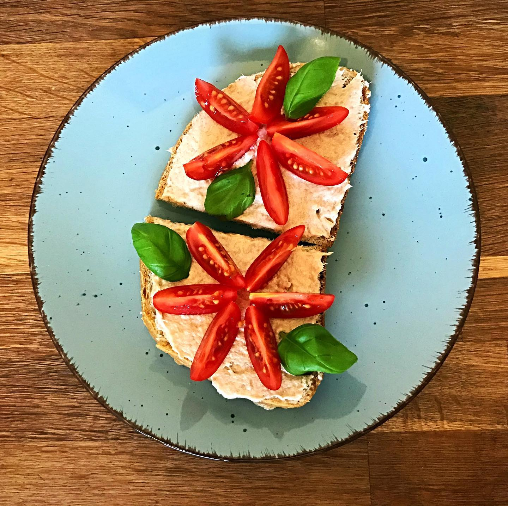

Tuniaková nátierka podľa @schwammellenka — Normy Jedál
Rozkvitol mi tanierik s chlebíkom s tuniakovou nátierkou.
Tuniaková natierka
Z konzervy “tuniak v oleji”, odlejeme časť oleja, osolíme, čmk, šťava z 1/2 citróna, horčica, zmäknuté maslo, 2-3 PL horúceho mlieka. Všetko spolu vyšľahať do peny. Môžete ozdobiť cibuľkou a veľmi k nej ladia paradajky. Tieto moje sú slovenské letné paradajky Sunstream zo @slnecne.zahrady #paradajky #tuniakovapomazanka #tuniakovanatierka